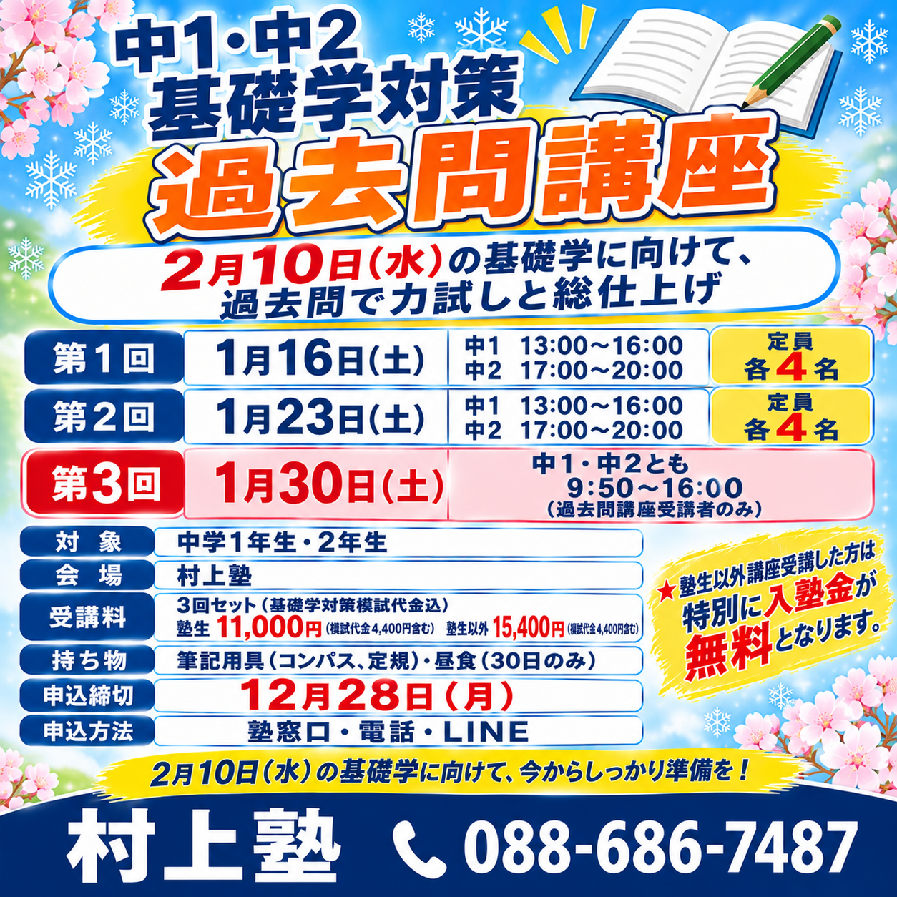

2026.11.28

中1・中2 基礎学対策 過去問講座のご案内
2月10日（水）に実施される基礎学力テストに向けて、
村上塾では中学1・2年生を対象に「基礎学対策 過去問講座」を開催します。
基礎学力テストは、これまでに学習した内容がどれだけ身についているかを確認する大切な機会です。
今回の講座では、過去問演習を通して自分の苦手な単元や理解が不十分な部分を見つけ、
解説を受けながら一つひとつ克服していきます。
また、最終回には進研Sテストを実施し、これまでの学習の成果を確認します。
「何から勉強すればいいか分からない」
「テストになると実力を発揮できない」
「苦手なところをそのままにしている」
という生徒さんにもおすすめの講座です。
早めの対策が、これからの学力につながります。
ぜひこの機会に、過去問に取り組み、自分の力を確かめながら自信につなげていきましょう。
皆さんのご参加をお待ちしております。
【お問い合わせ】
村上塾 TEL：088-686-7487
今後もイベントや講座を随時追加予定です。引き続き村上塾をよろしくお願いいたします。